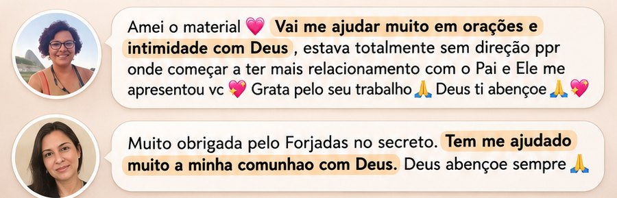

Devocional de 30 dias
Uma jornada diária com direção espiritual e emocional, exercícios práticos e a Palavra, para você voltar a viver de dentro para fora, na presença de Deus.
Quero começar hojeAcesso imediato no celular +11 mil mulheres já fizeram parteTalvez você se reconheça aqui
Você não precisa de mais uma lista de tarefas espirituais. Precisa de direção, de um lugar seguro para olhar para as próprias emoções e de um caminho simples para estar com Deus todos os dias.
“Mas tu, quando orares, entra no teu quarto e, fechando a porta, ora a teu Pai, que está em secreto.” — Mateus 6:6
O que é o Forjadas no Secreto
Um devocional com direção espiritual e emocional e exercícios práticos para cada dia. Você lê, reflete, responde e ora, em poucos minutos, no seu ritmo.
Lembrar quem você é em Deus, para além das funções e das cobranças.
Olhar com verdade e cuidado para o que você sente, à luz da Palavra.
Construir, dia após dia, um tempo real e constante com Deus.
O que você recebe
Leitura, reflexão, exercícios e oração, com direção espiritual e emocional para cada dia.
Chamadas para permanecer em oração pela sua casa e pela sua geração.
Para levar pessoas, situações e propósitos ao secreto.
Um estudo bíblico sobre batalha espiritual, autoridade e libertação.
Um guia para interceder com constância pelas pessoas que você ama.
Um ano de oração pelo seu casamento, seus filhos e sua casa.
Um ano de orações e princípios bíblicos para a sua vida financeira.
Bíblia completa, devocional diário, planos de leitura e estudos no seu celular.
Para organizar a sua vida de oração: pedidos, intercessão, alarmes e declarações.
O que as mulheres estão dizendo

Acesso completo
Compra segura pela Kiwify · Garantia de 7 dias
Quem vai caminhar com você
Psicanalista cristã e neuropsicanalista em formação, mãe de quatro filhos. O propósito dela é amar pessoas e levá-las a conhecer Jesus de verdade, não só ouvir falar dele, unindo fé e cuidado com as emoções.
Dúvidas frequentes
Logo depois da confirmação do pagamento, você recebe o acesso por e-mail, pela Kiwify. Dá para ler no celular, no tablet ou no computador.
Poucos minutos. Cada dia foi pensado para caber na rotina de uma mulher ocupada, sem pressa e sem culpa se precisar recomeçar.
Não. É um devocional com direção espiritual e emocional, reflexões e exercícios práticos. Os livros de oração são bônus que complementam a jornada.
Pode. A linguagem é simples e o caminho é guiado, dia após dia.
Você tem 7 dias para pedir o reembolso diretamente pela Kiwify.
Comece hoje. Daqui a 30 dias, você pode estar olhando para a sua vida com outros olhos.
Começar minha jornada por R$ 29Acesso imediatoO Forjadas no Secreto é um material devocional e educativo. Não substitui acompanhamento psicológico, médico ou terapêutico.
© Vanessa Oliveira